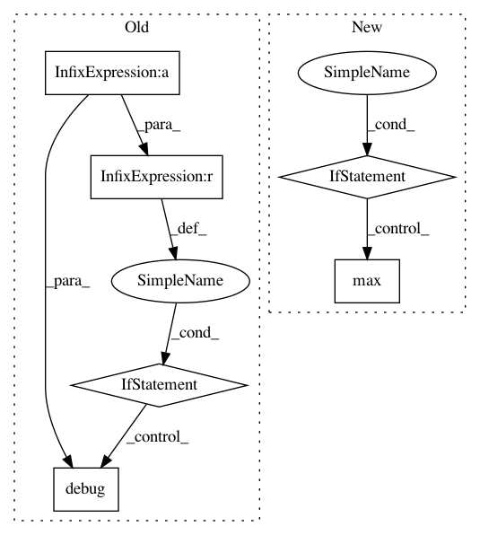

3159cb6eca130e9b6e2de7762abab1c173923007,lib/gui/control_helper.py,AutoFillContainer,rearrange_columns,#AutoFillContainer#Any#,270
Before Change
logger.debug("width outside min/max thresholds: (min: %s, width: %s, max: %s)",
self.single_column_width, width, self.max_width)
return
range_min = self.columns * self.single_column_width
range_max = (self.columns + 1) * self.single_column_width
if range_min < width < range_max:
logger.debug("width outside next step refresh threshold: (step down: %s, width: %s,"
"step up: %s)", range_min, width, range_max)
return
new_columns = width // self.single_column_width
logger.debug("Rearranging columns: (width: %s, old_columns: %s, new_columns: %s)",
width, self.columns, new_columns)
self.columns = new_columns
if not self._widget_config:
self.compile_widget_config()
self.destroy_children()
self.repack_columns()
self.pack_widget_clones(self._widget_config)
def compile_widget_config(self):
Compile all children recursively in correct order if not already compiled
zipped = zip_longest(*(subframe.winfo_children() for subframe in self.subframes))
children = [child for group in zipped for child in group if child is not None]
self._widget_config = [{"class": child.__class__,
"id": str(child),
"tooltip": _TOOLTIPS.get(str(child), None),
"pack_info": self.pack_config_cleaner(child),
"name": child.winfo_name(),
"config": self.config_cleaner(child),
"children": self.get_all_children_config(child, [])}
for idx, child in enumerate(children)]
logger.debug("Compiled AutoFillContainer children: %s", self._widget_config)
def get_all_children_config(self, widget, child_list):
Return all children, recursively, of given widget
for child in widget.winfo_children():
if child.winfo_ismapped():
id_ = str(child)
child_list.append({"class": child.__class__,
"id": id_,
"tooltip": _TOOLTIPS.get(id_, None),
"pack_info": self.pack_config_cleaner(child),
"name": child.winfo_name(),
"config": self.config_cleaner(child),
"parent": child.winfo_parent()})
self.get_all_children_config(child, child_list)
return child_list
@staticmethod
def config_cleaner(widget):
Some options don"t like to be copied, so this returns a cleaned
configuration from a widget
We use config() instead of configure() because some items (TScale) do
not populate configure()
new_config = dict()
for key in widget.config():
if key == "class":
continue
val = widget.cget(key)
if key in ("anchor", "justify") and val == "":
continue
// Return correct command from master command dict
val = _COMMANDS[val] if key == "command" and val != "" else val
new_config[key] = val
return new_config
@staticmethod
def pack_config_cleaner(widget):
Some options don"t like to be copied, so this returns a cleaned
configuration from a widget
return {key: val for key, val in widget.pack_info().items() if key != "in"}
def destroy_children(self):
Destroy the currently existing widgets
for subframe in self.subframes:
for child in subframe.winfo_children():
child.destroy()
def repack_columns(self):
Repack or unpack columns based on display columns
for idx, subframe in enumerate(self.subframes):
if idx < self.columns and not subframe.winfo_ismapped():
subframe.pack(padx=5, pady=5, side=tk.LEFT, anchor=tk.N, expand=True, fill=tk.X)
elif idx >= self.columns and subframe.winfo_ismapped():
subframe.pack_forget()
def pack_widget_clones(self, widget_dicts, old_children=None, new_children=None):
Widgets cannot be given a new parent so we need to clone
them and then pack the new widget
for widget_dict in widget_dicts:
logger.debug("Cloning widget: %s", widget_dict)
old_children = [] if old_children is None else old_children
new_children = [] if new_children is None else new_children
if widget_dict.get("parent", None) is not None:
parent = new_children[old_children.index(widget_dict["parent"])]
else:
// Get the next subframe if this doesn"t have a logged parent
parent = self.subframe
clone = widget_dict["class"](parent, name=widget_dict["name"])
if widget_dict["config"] is not None:
clone.configure(**widget_dict["config"])
if widget_dict["tooltip"] is not None:
Tooltip(clone, **widget_dict["tooltip"])
clone.pack(**widget_dict["pack_info"])
old_children.append(widget_dict["id"])
new_children.append(clone)
if widget_dict.get("children", None) is not None:
self.pack_widget_clones(widget_dict["children"], old_children, new_children)
class ControlBuilder():
Builds and returns a frame containing a tkinter control with label
Currently only setup for config items
Parameters
----------
parent: tkinter object
Parent tkinter object
title: str
Title of the control. Will be used for label text
dtype: datatype object
Datatype of the control.
default: str
Default value for the control
selected_value: str, optional
Selected value for the control. If None, default will be used
choices: list or tuple, object
Used for combo boxes and radio control option setting
is_radio: bool, optional
Specifies to use a Radio control instead of combobox if choices are passed
rounding: int or float, optional
For slider controls. Sets the stepping
min_max: int or float, optional
For slider controls. Sets the min and max values
sysbrowser: dict, optional
Adds Filesystem browser buttons to ttk.Entry options.
Expects a dict: {sysbrowser: str, filetypes: str}
helptext: str, optional
Sets the tooltip text
option_columns: int, optional
Sets the number of columns to use for grouping radio buttons
label_width: int, optional
Sets the width of the control label. Defaults to 20
checkbuttons_frame: tk.frame, optional
If a checkbutton frame is passed in, then checkbuttons will be placed in this frame
rather than the main options frame
control_width: int, optional
Sets the width of the control. Default is to auto expand
blank_nones: bool, optional
Sets selected values to an empty string rather than None if this is true. Default is true
def __init__(self, parent, title, dtype, default,
selected_value=None, choices=None, is_radio=False, rounding=None,
min_max=None, sysbrowser=None, helptext=None, option_columns=3, label_width=20,
checkbuttons_frame=None, control_width=None, blank_nones=True):
logger.debug("Initializing %s: (parent: %s, title: %s, dtype: %s, default: %s, "
"selected_value: %s, choices: %s, is_radio: %s, rounding: %s, min_max: %s, "
"sysbrowser: %s, helptext: %s, option_columns: %s, label_width: %s, "
"checkbuttons_frame: %s, control_width: %s, blank_nones: %s)",
self.__class__.__name__, parent, title, dtype, default, selected_value,
choices, is_radio, rounding, min_max, sysbrowser, helptext, option_columns,
label_width, checkbuttons_frame, control_width, blank_nones)
self.title = title
self.default = default
self.helptext = self.format_helptext(helptext)
self.helpset = False
self.label_width = label_width
self.filebrowser = None
self.frame = self.control_frame(parent)
self.chkbtns = checkbuttons_frame
self.control = self.set_control(dtype, choices, is_radio)
self.tk_var = self.set_tk_var(dtype, selected_value, blank_nones)
self.build_control(choices,
dtype,
rounding,
min_max,
sysbrowser,
option_columns,
control_width)
logger.debug("Initialized: %s", self.__class__.__name__)
// Frame, control type and varable
def control_frame(self, parent):
Frame to hold control and it"s label
logger.debug("Build control frame")
frame = ttk.Frame(parent, name="fr_{}".format(self.title.lower()))
frame.pack(fill=tk.X)
logger.debug("Built control frame")
return frame
def format_helptext(self, helptext):
Format the help text for tooltips
if helptext is None:
return helptext
logger.debug("Format control help: "%s"", self.title)
if helptext.startswith("R|"):
helptext = helptext[2:].replace("\nL|", "\n - ").replace("\n", "\n\n")
else:
helptext = helptext.replace("\n\t", "\n - ").replace("%%", "%")
helptext = ". ".join(i.capitalize() for i in helptext.split(". "))
helptext = self.title + " - " + helptext
logger.debug("Formatted control help: (title: "%s", help: "%s"", self.title, helptext)
return helptext
def set_control(self, dtype, choices, is_radio):
Set the correct control type based on the datatype or for this option
if choices and is_radio:
control = ttk.Radiobutton
elif choices:
control = ttk.Combobox
elif dtype == bool:
control = ttk.Checkbutton
elif dtype in (int, float):
control = ttk.Scale
else:
control = ttk.Entry
logger.debug("Setting control "%s" to %s", self.title, control)
return control
def set_tk_var(self, dtype, selected_value, blank_nones):
Correct variable type for control
logger.debug("Setting tk variable: (title: "%s", dtype: %s, selected_value: %s, "
"blank_nones: %s)",
self.title, dtype, selected_value, blank_nones)
if dtype == bool:
var = tk.BooleanVar
elif dtype == int:
var = tk.IntVar
elif dtype == float:
var = tk.DoubleVar
else:
var = tk.StringVar
var = var(self.frame)
val = self.default if selected_value is None else selected_value
val = "" if val is None and blank_nones else val
var.set(val)
logger.debug("Set tk variable: (title: "%s", type: %s, value: "%s")",
self.title, type(var), val)
return var
// Build the full control
def build_control(self, choices, dtype, rounding, min_max, sysbrowser, option_columns,
control_width):
Build the correct control type for the option passed through
logger.debug("Build config option control")
if self.control not in (ttk.Checkbutton, ttk.Radiobutton):
self.build_control_label()
self.build_one_control(choices,
dtype,
rounding,
min_max,
sysbrowser,
option_columns,
control_width)
logger.debug("Built option control")
def build_control_label(self):
Label for control
logger.debug("Build control label: (title: "%s")", self.title)
title = self.title.replace("_", " ").title()
lbl = ttk.Label(self.frame, text=title, width=self.label_width, anchor=tk.W)
lbl.pack(padx=5, pady=5, side=tk.LEFT, anchor=tk.N)
After Change
def rearrange_columns(self, width):
On column number change redistribute widgets
if not self.validate(width):
return
new_columns = min(self.max_columns, max(1, width // self.single_column_width))
logger.debug("Rearranging columns: (width: %s, old_columns: %s, new_columns: %s)",
width, self.columns, new_columns)
self.columns = new_columns
In pattern: SUPERPATTERN
Frequency: 3
Non-data size: 6
Instances
Project Name: deepfakes/faceswap
Commit Name: 3159cb6eca130e9b6e2de7762abab1c173923007
Time: 2019-08-28
Author: 36920800+torzdf@users.noreply.github.com
File Name: lib/gui/control_helper.py
Class Name: AutoFillContainer
Method Name: rearrange_columns
Project Name: ray-project/ray
Commit Name: 63594c537064d5cc47179169df6e6e6defa613d6
Time: 2021-03-25
Author: ed.nmi.oakes@gmail.com
File Name: python/ray/serve/backend_state.py
Class Name: BackendState
Method Name: _scale_backend_replicas
Project Name: automl/SMAC3
Commit Name: 1a1d444b0d02c0c484decfb03bf57b18d4af0e85
Time: 2016-12-19
Author: marius.rks@googlemail.com
File Name: smac/epm/rfr_imputator.py
Class Name: RFRImputator
Method Name: impute